不知道你是否参加过拼多多上邀请微信好友砍价功能，这个功能实现首先需要考虑的就是获取微信用户的信息。获取用户信息就是获取公众号下微信用户的信息，今天我就来讲讲如何从公众号下获取微信用户信息。
需要声明一点的是获取微信公众号下的用户信息的权限是服务号才有，个人订阅号是没有该权限的。
第一步需要先申请接口测试号并进行网页授权设置
访问如下链接进行接口测试号申请。
https://developers.weixin.qq.com/doc/offiaccount/Basic_Information/Requesting_an_API_Test_Account.html选择接口测试号申请，如下图所示：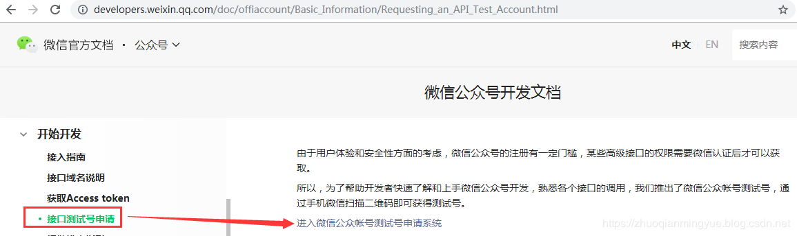
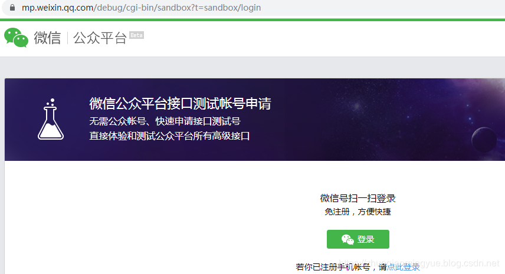
点击登录进行扫码登录，如下图所示：
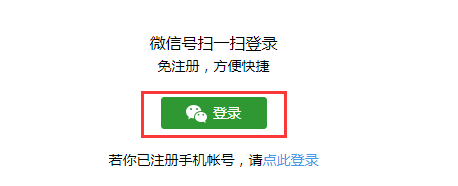
登录后如下图所示：
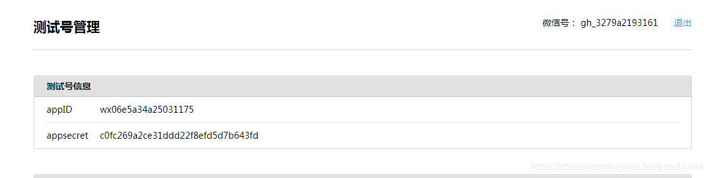
在下面的的网页账号一栏添加网页授权的IP或者域名。
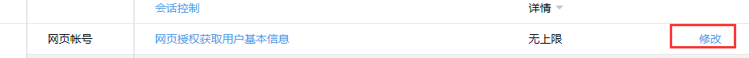
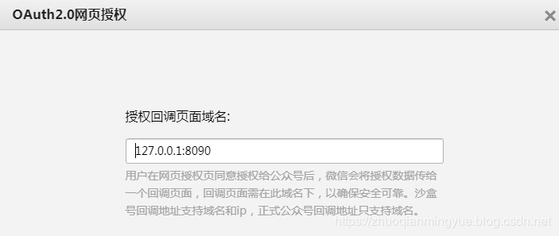
为了方便测试我这里设置成了回环地址，最好设置成具体的 IP 地址或者域名信息。域名和 IP 地址不要添加http或者https。这里 IP 和域名可以是内网地址。
到这里网页授权设置完毕！
第二步是下载微信web开发者工具，可以在PC 进行测试。
https://developers.weixin.qq.com/doc/offiaccount/OA_Web_Apps/Web_Developer_Tools.html
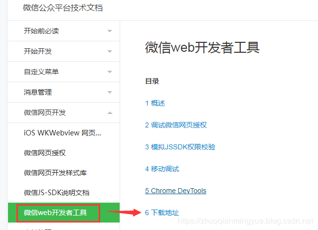
傻瓜式一步一步安装即可。
第三步 看微信操作教程并完成代码实现
接下来就是代码部分编写了，在开发前首先需要看一下获取微信公众号用户信息的教程：
通过访问：https://developers.weixin.qq.com/doc/offiaccount/OA_Web_Apps/Wechat_webpage_authorization.html 。获取微信用户信息具体操作有如下4步。
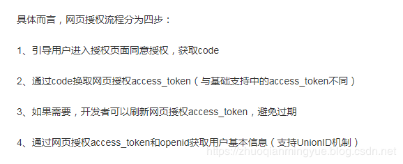
第一步：用户同意授权，获取code
代码的操作就是拼接引导用户进行微信授权地址，然后重定向到微信服务，微信服务在根据重定向的 URL 地址并携带 code 重定向到我们的服务器。这一步需要配置有公众号 appid 和 redirect_uri 。
需要注意的是重定向的地址需要 encode 以下，具体操作如下面代码所示：
String url = URLEncoder.encode(request.getRequestURL().toString());具体地址如下图所示：红色框位置需要改为我们公众号 appid 和 redirect_uri 信息，其他的内容不用改动。
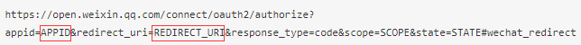
程序重定向该地址后会让用户进行授权，如下图所示：
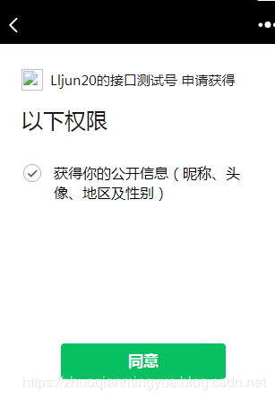
用户点击同意后，微信服务会根据重定向地址重定向回我们的服务中并携带code。
第二步就是根据 code 获取网页授权 access_token 和 openid。
调用如下面所示微信 API ，红色框 code 替换成获取的 code，其他内容不用做任何改动。
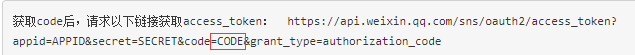
第三步：刷新access_token（如果需要）
access_token有效期是7200s，当access_token超时后，可以使用refresh_token进行刷新，refresh_token有效期为30天，当refresh_token失效之后，需要用户重新授权。这步可做可不做，我们这里就绕开这步。
第四步：拉取用户信息(需scope为 snsapi_userinfo)
关于网页授权的两种scope的区别说明
1、以snsapi_base为scope发起的网页授权，是用来获取进入页面的用户的openid的，并且是静默授权并自动跳转到回调页的。用户感知的就是直接进入了回调页（往往是业务页面）
2、以snsapi_userinfo为scope发起的网页授权，是用来获取用户的基本信息的。但这种授权需要用户手动同意，并且由于用户同意过，所以无须关注，就可在授权后获取该用户的基本信息。
根据第二步获取的 access_token 和 opendId 获取微信用户的信息。调用如下图所示微信 API，将获取的 access_token 和 opendId 替换如下图中红色框位置内容，其他不用做任何改动。返回的 json 信息就是该公众好号的用户信息。
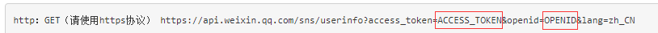
讲完操作流程，接下来就是代码实现。具体获取微信用户信息 Controller 内容如下：
@RestController
@RequestMapping("/weixin")
public class WeiXinDemoController {
@Autowired
private WeiXinService weiXinService;
@RequestMapping("/getWeiXinUserInfo")
public String getWeiXinUserInfo(String code,HttpServletRequest request,HttpServletResponse response,HttpSession session) throws IOException{
//第一步：用户同意授权，获取code
if (code == null) {
String url = URLEncoder.encode(request.getRequestURL().toString());
String authorizeUrl = weiXinService.buildAuthorizeURL(url);
response.sendRedirect(authorizeUrl);
return null;
}
//第二步：通过code换取网页授权access_token和openid
String htmlInfo = "";
Map<String, Object> openIdInfo = weiXinService.getOpenIdInfo(code);
String errcode = (String)openIdInfo.get("errcode");
if(StringUtils.isEmpty(errcode)){
//第四步：拉取用户信息(需scope为 snsapi_userinfo)根据access_token和OpenId
Map<String, Object> weiXinUserInfo = weiXinService.getWeiXinUserInfo(openIdInfo);
String userInfohtml = createUserInfoHtml(weiXinUserInfo);
return userInfohtml;
}
return htmlInfo;
}@Component
@ConfigurationProperties(prefix="wx")
public class WeiXinConfig {
private String appID;
private String mchID;
private String appsecret;
private String key;
//省略getter and setter
}application.properties 配置内容如下：
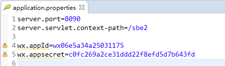
微信核心处理都在 WeiXinService中，微信接口调用时通过 RestTemplate来实现的。
拼接引导用户进行微信授权地址代码如下：
/**
* 拼接用户授权重定向的URL
* @param url
* @return
*/
public String buildAuthorizeURL(String url){
return concatAuthorizeURL(url);
}
private String concatAuthorizeURL(String url) {
StringBuilder authorizeUrl = new StringBuilder(AUTHORIZEURL);
authorizeUrl.append("?appid=").append(weiXinConfig.getAppID());
authorizeUrl.append("&redirect_uri=").append(url);
authorizeUrl.append("&response_type=code");
//snsapi_base （不弹出授权页面，直接跳转，只能获取用户openid），
//snsapi_userinfo （弹出授权页面，可通过openid拿到昵称、性别、所在地。并且， 即使在未关注的情况下，只要用户授权，也能获取其信息 ）
authorizeUrl.append("&scope=snsapi_userinfo");
authorizeUrl.append("&state=").append("STATE");
authorizeUrl.append("#wechat_redirect");
return authorizeUrl.toString();
}根据 code 获取网页授权 access_token 和 openid 代码如下：
/**
* 获取 access_token 和 openid
* @param code
* @return
*/
public Map<String,Object> getOpenIdInfo(String code){
String getAccessTokenUrl = concatGetOpenIdInfoURL(code);
String json = postRequestForWechat(getAccessTokenUrl);
Map<String,Object> map = jsonToMap(json);
return map;
}
private String concatGetOpenIdInfoURL(String code) {
StringBuilder getAccessTokenUrl = new StringBuilder(GE_TACCESSTOKEN_URL);
getAccessTokenUrl.append("?appid=").append(weiXinConfig.getAppID());
getAccessTokenUrl.append("&secret=").append(weiXinConfig.getAppsecret());
getAccessTokenUrl.append("&code=").append(code);
getAccessTokenUrl.append("&grant_type=authorization_code");
return getAccessTokenUrl.toString();
}
private String postRequestForWechat(String getAccessTokenUrl) {
ResponseEntity<String> postForEntity = restTemplate.postForEntity(getAccessTokenUrl, null, String.class);
String json = postForEntity.getBody();
return json;
}
private Map jsonToMap(String json) {
Gson gons = new Gson();
Map map = gons.fromJson(json, new TypeToken<Map>(){}.getType());
return map;
}通过 access_token 和 openid 获取微信用户信息 代码如下：
/**
* 获取微信用户信息通过 access_token 和 openid
* @param map
* @return
*/
public Map getWeiXinUserInfo(Map<String, Object> map) {
String getUserInfoUrl = concatGetWeiXinUserInfoURL(map);
String json = getRequestForWechat(getUserInfoUrl);
Map userInfoMap = jsonToMap(json);
return userInfoMap;
}
private String concatGetWeiXinUserInfoURL(Map<String, Object> map) {
String openId = (String) map.get("openid");
String access_token = (String) map.get("access_token");
// 绕过检验授权凭证（access_token）是否有效
StringBuilder getUserInfoUrl = new StringBuilder(GE_USERINFO_URL);
getUserInfoUrl.append("?access_token=").append(access_token);
getUserInfoUrl.append("&openId=").append(openId);
getUserInfoUrl.append("&lang=zh_CN");
return getUserInfoUrl.toString();
}
private String getRequestForWechat(String getUserInfoUrl) {
ResponseEntity<String> postForEntity = restTemplate.getForEntity(getUserInfoUrl.toString(), String.class);
String json = postForEntity.getBody();
return json;
}下载微信web开发者工具完成后，根据傻瓜式安装即可。安装完成后打开web开发者工具，如下图所示选择公众号网页。
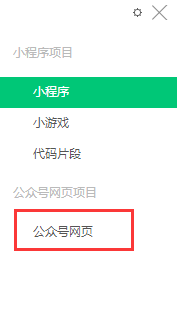
输入 http:127.0.1:8090/sbe2/weixin/getWeiXinUserInfo，就会看到该测试公众号的用户信息。
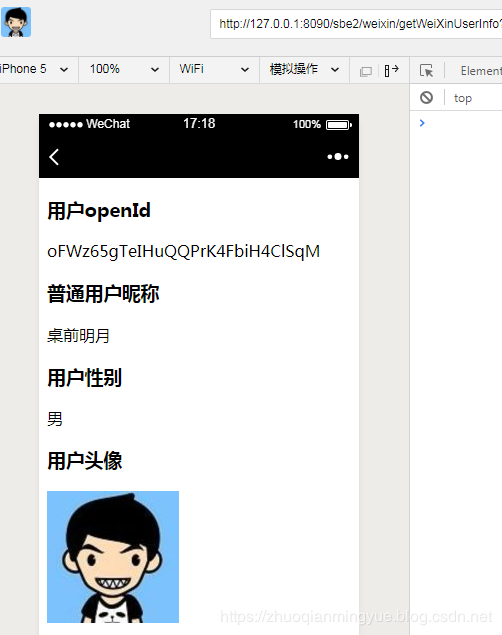
一般情况下我们通过接口测试号配置成测试环境域名或 IP，测试通过后就可以在服务号上配置网页授权域名，顺便在把我们项目配置的 appid 换成服务号的 appid 即可。具体操作如下：
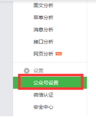
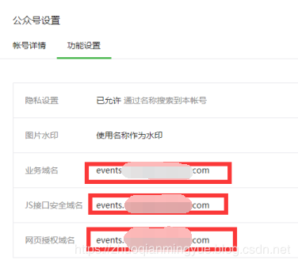
获取微信公众号用户信息步骤就是：第一步拼接引导用户授权的地址然后根据该地址重定向到微信服务，第二步获取授权code，根据 code 获取 access_token 和 OpenId，第三步根据 access_token 和 OpenId 获取微信用户信息。
我这里介绍最简三步，正常来讲还需要验证access_token 是否有效，这一步也可以通过缓存access_token到Reid中并设置过期时间，当其失效后刷新access_token。
在这里再三强调一下，微信提供操作文档一定要多看几篇，因为很多细节都在文档中进行了说明。当你把微信提供操作文档看透，你就会觉得其实就是个API 调用而已。
具体代码示例请查看我的GitHub 仓库 springbootexamples 中的 spring-boot-2.x-weixin 查看。
GitHub：https://github.com/zhuoqianmingyue/springbootexamples